Les animations des capacités : esquisses
Une capacité ne joue aujourd'hui que le geste LPC du lanceur. Voici, effet par effet, ce qui manque : scène de 192 × 96 px montrée à 3×, 12 images par seconde. Les briques réutilisables sont dans la bibliothèque.
Le Mage
Étincelle
Mage18 images · 1,5 s- 0–5 : le mage lève les mains, une étincelle grossit au creux des paumes
- 6–11 : la boule file vers la cible en laissant des grains dorés
- 12–15 : elle éclate en étoile, des éclats retombent ; la cible blanchit et recule
Images clés : 6 · 9 · 12 · 14
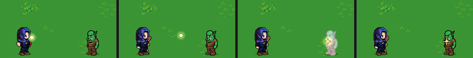
Éclaboussure
Mage20 images · 1,7 s- 0–5 : une bulle d'eau se forme entre les mains
- 5–11 : elle part en cloche, en tournant sur elle-même
- 12 : elle s'écrase aux pieds de la cible : une couronne de gouttes
- 13–19 : la flaque s'étale (la surface Eau du jeu) ; la cible goutte : Trempée
Images clés : 8 · 11 · 13 · 17
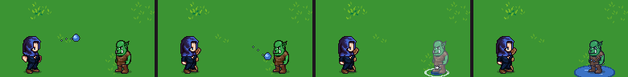
Foudre
Mage20 images · 1,7 s- 0–7 : le mage appelle la foudre : la salle s'assombrit, des arcs crépitent entre ses mains
- 8 : l'éclair tombe du ciel sur la cible, tout flashe en blanc
- 9–11 : il se ramifie et vacille, la cible est blanche, l'écran tremble
- 12–19 : un second coup plus fin, une brûlure au sol, des arcs courent sur la cible, la lumière revient
Images clés : 7 · 8 · 10 · 15
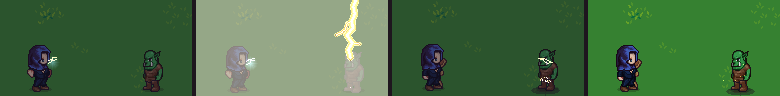
Foudre sur l'eau (combo)
Mage20 images · 1,7 s- 0–7 : la cible est déjà dans une flaque (Éclaboussure ou Pluie)
- 8 : l'éclair frappe la cible
- 9–16 : l'eau s'électrise : des arcs jaunes courent sur toute la flaque, ses reflets virent au jaune pâle
- 17–19 : les arcs s'éteignent ; la bannière « L'eau est électrisée ! » du jeu reste à l'écran
Images clés : 8 · 10 · 13 · 17
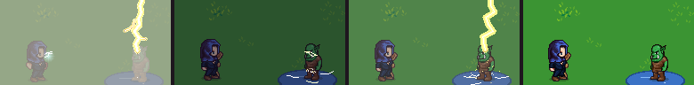
Le Voleur et l'Éclaireuse
Flèche de feu
Voleur20 images · 1,7 s- 0–8 : le voleur bande l'arc ; à l'image 6 la pointe de la flèche s'allume
- 9–11 : la flèche file, une traînée de braises derrière elle
- 12 : elle se plante, une gerbe de feu éclate
- 13–19 : de petites flammes lèchent la cible, une fumée grise monte (sur un Huilé : ×2, et l'huile prend feu)
Images clés : 9 · 11 · 12 · 16
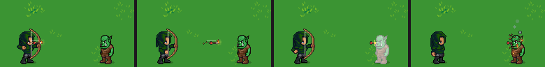
Fiole d'huile
Voleur20 images · 1,7 s- 0–8 : le voleur lance (le jeu joue le geste du tir ; un geste de lancer serait plus juste)
- 4–11 : la fiole part en cloche en tournant (4 images de rotation)
- 12 : elle se brise : éclats de verre, giclée d'huile violet sombre
- 13–19 : la flaque d'huile s'étale avec un reflet irisé ; la cible dégouline : Huilée
Images clés : 8 · 11 · 12 · 17
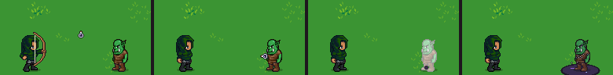
Tir rapide
Éclaireuse18 images · 1,5 s- 0–8 : l'éclaireuse bande l'arc, plus vite que pour un tir normal
- 9–10 et 11–12 : deux flèches partent coup sur coup, avec une traînée blanche
- 11 et 13 : deux petits impacts, la cible recule deux fois
Images clés : 10 · 11 · 13 · 14
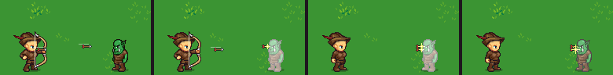
Filet
Éclaireuse20 images · 1,7 s- 0–8 : l'éclaireuse tire (le geste du tir)
- 9–11 : une pelote de corde s'ouvre en vol et devient un filet lesté
- 12–13 : il retombe sur la cible et l'enveloppe
- 14–19 : la cible est prise : Gelée (−3 m, désavantage) ; le filet tressaute quand elle se débat
Images clés : 10 · 12 · 13 · 18
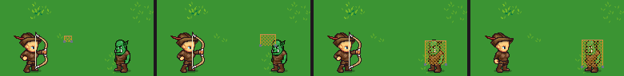
Tir lesté
Éclaireuse20 images · 1,7 s- 0–8 : l'éclaireuse bande longtemps (le tir lourd)
- 9–11 : une flèche à tête de plomb, plus lente, qui retombe un peu
- 12 : choc sourd : la cible recule de 4 px, un anneau de poussière au sol, l'écran tremble
- 13–19 : la poussière retombe ; ×2 sur une cible Gelée (le filet)
Images clés : 10 · 12 · 13 · 16
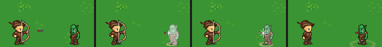
Le Druide et la Barde
Fouet de ronce
Druide18 images · 1,5 s- 0–4 : le druide pousse son bâton ; une ronce jaillit du bout
- 3–7 : elle s'allonge en ondulant, épines rouges dehors
- 7–8 : le bout claque sur la cible (un « fouet » : petit éclat blanc, feuilles arrachées)
- 9–14 : la ronce se rétracte vers le bâton
Images clés : 5 · 7 · 8 · 12
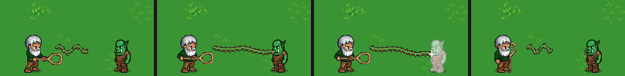
Liane
Druide22 images · 1,8 s- 0–6 : le druide tend la main, une liane feuillue part vers l'ennemi
- 7–9 : elle s'enroule deux fois autour de sa taille
- 10–15 : elle tire : l'ennemi glisse de 3 m vers le druide (une traînée de poussière sous ses pieds), dans le feu, l'eau ou le fossé s'il y en a
- 16–21 : la liane lâche et se fane en feuilles qui tombent
Images clés : 8 · 11 · 14 · 18
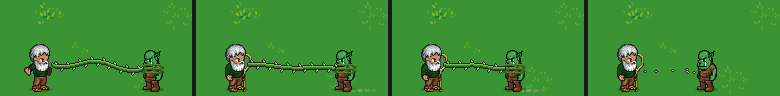
Pluie
Druide24 images · 2,0 s- 0–7 : le druide lève les mains ; au-dessus de la zone, un nuage se gonfle et s'assombrit
- 6–19 : la pluie tombe en biais sur 2,5 m, chaque goutte fait un petit rond au sol
- 9–19 : une grande flaque s'étale (la surface Eau) ; ceux dedans sont Trempés
- 20–23 : le nuage se dissipe, la flaque reste
Images clés : 8 · 12 · 16 · 22
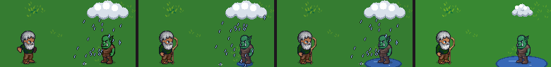
Chant de bataille
Barde22 images · 1,8 s- 0–6 : la barde chante (le geste du sort) ; trois notes violettes s'envolent l'une après l'autre
- 3–13 : elles dansent jusqu'à l'allié en suivant une vague
- 10–14 : chaque note éclate en paillettes dorées en le touchant
- 12–21 : un halo doré pulse autour de l'allié, des étincelles montent : il a l'avantage à sa prochaine attaque
Images clés : 8 · 11 · 14 · 19
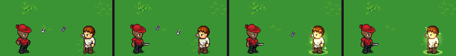
Moquerie
Barde22 images · 1,8 s- 0–8 : la barde se moque : une bulle « HA HA ! » sort de sa bouche en rebondissant
- 6–11 : la bulle file et éclate sur l'ennemi ; il rougit, un signe de colère au-dessus de sa tête
- 12–21 : il est Exposé : quatre coins rouges l'encadrent et clignotent (la prochaine attaque contre lui a l'avantage)
Images clés : 6 · 10 · 14 · 18
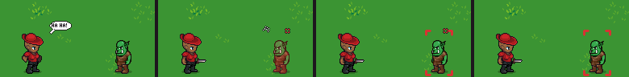
Le Gardien et le Chevalier
Soin
Gardien22 images · 1,8 s- 0–6 : le gardien lève les mains, des grains de lumière verte s'y rassemblent
- 4–9 : un ruban de grains file jusqu'à l'allié (9 m)
- 8–13 : une colonne de lumière douce descend sur l'allié
- 9–21 : des croix vertes montent autour de lui (le « +18 » du jeu monte au-dessus)
Images clés : 8 · 11 · 14 · 19
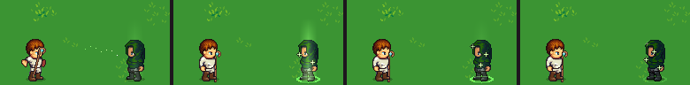
Garde de givre
Gardien22 images · 1,8 s- 0–6 : le gardien lève les mains ; un souffle de flocons part vers la zone
- 6–10 : des pics de glace jaillissent du sol en cercle autour de la cible (1,7 m)
- 11–13 : ils éclatent en paillettes ; une plaque de glace reste au sol (la surface Glace, l'eau gèle)
- 12–21 : l'ennemi dessus est Gelé : teinte bleutée, de petits glaçons sur la tête
Images clés : 8 · 10 · 12 · 18
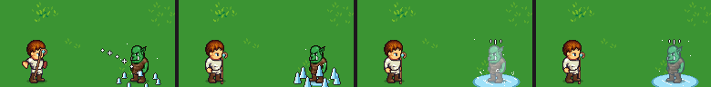
Cri de ralliement
Chevalier22 images · 1,8 s- 0–6 : le chevalier crie : trois traits partent de son casque, l'écran tremble un peu
- 3–12 : des anneaux dorés s'élargissent au sol depuis lui (4,5 m), une onde dans l'air
- 9–12 : les alliés touchés par l'onde s'éclairent
- 10–21 : des croix vertes montent sur chacun, lui compris (+10 PV)
Images clés : 6 · 9 · 12 · 17
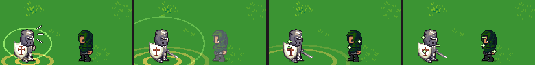
Charge au bouclier
Chevalier20 images · 1,7 s- 0–1 : le chevalier se ramasse derrière son bouclier
- 2–6 : il fonce (la marche, deux fois plus vite), poussière et traits de vitesse derrière lui
- 7 : le choc : grande étoile blanche, éclair bleu du bouclier, l'écran tremble
- 7–11 : la cible est repoussée de 3 m en glissant ; si elle heurte quelque chose : +8 et À terre
Images clés : 6 · 7 · 10 · 15
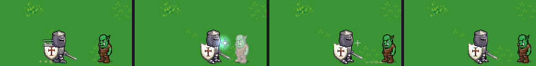
La mêlée et les gestes de tous
Coup d'épée (la taille)
Chevalier14 images · 1,2 s- 0–1 : le chevalier arme son coup (la taille LPC, avec la grande épée)
- 2–3 : un croissant blanc suit la lame, de haut en bas
- 3 : l'impact : petite étoile, la cible blanchit et recule
- 4–6 : le croissant s'efface ; la même traînée sert au Sbire et aux Brutes, en plus large
Images clés : 2 · 3 · 4 · 6
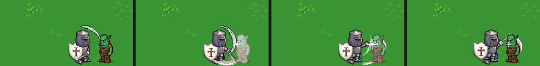
Fracas
Brute16 images · 1,3 s- 0–1 : la brute lève sa hache à deux mains
- 2–3 : un large croissant orangé, plus épais que celui de l'épée
- 3 : l'impact écrase : l'écran tremble fort, le sol se fend, de la terre gicle
- 4–9 : la poussière retombe, la fissure reste un moment
Images clés : 2 · 3 · 4 · 7
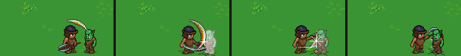
Dague (l'estoc)
Barde · Voleur · Gardien14 images · 1,2 s- 0–3 : la barde recule le bras (l'estoc LPC)
- 4–5 : un trait blanc fin file droit devant, un « tink » à la pointe
- 5 : petite étoile rouge et blanche, la cible recule
- La même traînée sert à l'Ouverture du Voleur et au Coup de bâton du Gardien (en bois, plus court)
Images clés : 4 · 5 · 6 · 8
Ouverture
Voleur20 images · 1,7 s- 0–5 : l'estoc du voleur, la même traînée que la Dague
- 5 : l'impact ; la cible est fauchée
- 6–10 : elle tombe (le « blessé » LPC joué jusqu'au bout), un nuage de poussière à ses pieds
- 11–19 : elle reste à terre ; trois étoiles tournent au-dessus d'elle tant qu'elle est À terre
Images clés : 5 · 7 · 10 · 16
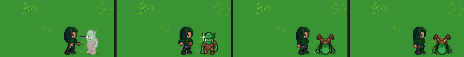
Projection (et Pousser)
Brute · tous20 images · 1,7 s- 0–3 : la brute empoigne et lance (la taille LPC)
- 3–8 : la cible vole de 4,5 m, en cloche basse, avec des traits de vitesse
- 8 : elle heurte le tonneau : étoile, l'écran tremble, +8 et À terre
- 9–19 : elle reste à terre. Pousser : le même mouvement, sans vol (une glissade au sol), sur 3 m
Images clés : 5 · 7 · 9 · 15
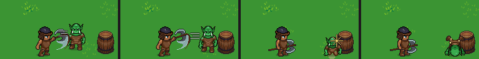
Potion
tous20 images · 1,7 s- 0–3 : le héros boit (aucun geste LPC n'existe : le geste du sort, ou rien)
- 2–12 : des bulles rouges montent autour de lui en grossissant, puis éclatent
- 6–10 : un cœur rouge apparaît au-dessus de sa tête et palpite
- 8–19 : une lueur rouge pâle, des croix vertes (+20 PV)
Images clés : 5 · 8 · 11 · 16
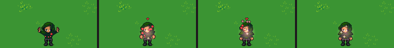
Relever
tous24 images · 2,0 s- 0–3 : un allié est KO au sol ; le gardien se penche (le geste du sort)
- 3–10 : une colonne dorée descend sur le KO, des paillettes montent
- 10–14 : il se relève (le « blessé » LPC joué à l'envers)
- 14–23 : debout à 25 PV : un « debout » et des croix vertes
Images clés : 7 · 10 · 13 · 18
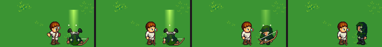